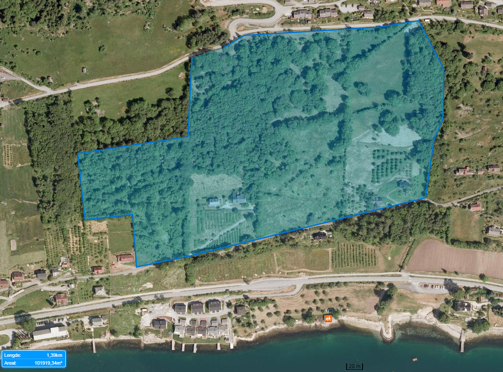
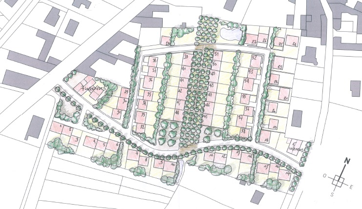
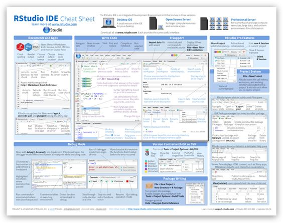

Runoff management course
Florian Kobierska Baffie


Florian Kobierska Baffie
Tel: +47 57677604
Cell: +33 783690626
Email: fkba@hvl.no (best)
Office: 3 past Tarald, on the left
Something about you!
- Where do you come from?
- What have you studied?
- Motivation for the master?
- Motivation for this course?!
- Master project idea?
- Post-master plans?
Course plan
Approximately half of the course will be focused on the basics of:
- Hydrology: how rainfall becomes streamflow?
- Hydraulics: how water moves in open channels and under pressure?
Before looking at two quite disctinct scenarios (in Norway):
- Catchment scale flooding: how to deal with large-scale flooding?
- Urban stormwater (SW) and flooding: how to best manage urbanized catchments?
Learning outcomes
Knowledge of:
- the different components in the hydrological cycle and local water balance
- the challenges and possibilities related to local runoff management
- erosion and sediment transport in catchments and related mitigation measures
- land use planning for local runoff management
- potential impacts of climate change on water resources
Skills
- Make simple hydrological, hydrogeological and hydraulic calculations relevant to runoff management
- Provide input for action plans and suggests solutions for local runoff management
- Use different measuring techniques and carry out simple dimensional calculations of green infrastructure systems for urban runoff management
- Use relevant computer software and GIS to identify flood-prone areas and potential problems arising from urban flooding and runoff
Teaching philosophy

“It is essential to see lectures as a means of helping students learn to think about the key concepts of a particular subject, rather than primarily as a means of transferring knowledge from instructor to student.”
Teaching philosophy
- Open source text-based material (for collaboration), available online
- Links to a lot freely available material
- Lots of questions to force thinking / active learning
- Open to a variety of projects this year
Given those course design choices:
- Be active: take part in brainstorming exercises and questions
- Be creative in your projects
- Don’t hesitate to ask questions and reach for help
- Give feedback: The course is a living document, please suggest improvements!
Soft skills: learning
- Deliberate practice (Focus, challenge, feedback, repeat!)
- Deconstruct skills (music, sport, coding…)
- Learn from contradictory views, from your “opponents” (climate deniers, politics, some large companies…), or apparently unrelated fields
- Be open to change
- How to get better at the things you care about? Alternate between learning zone and performing zone
- Scott Young: Interesting blog on learning strategies
- Mistakes are not failure, only learning
Soft skills: work / life
Soft skills: leadership
Agenda: 02-05 May
| Tue. 02 May |
09:15-12:00 |
The water cycle |
Høgskbygget 2.etg kl Stad |
| Wed. 03 May |
09:15-12:00 |
Introduction to SW |
Svingen F3 |
| Wed. 03 May |
12:30-? |
Excursion drinking water |
Stadionbygget 02-02 |
| Thu. 04 May |
09:15-12:00 |
Hydrological processes |
Svingen F3 |
| Fri. 05 May |
09:15-12:00 |
Open channel hydraulics |
Svingen F3 |
Agenda 08-12 May
| Mon. 08 May |
09:15-12:00 |
Hydrological extremes |
Svingen F3 |
| Tue. 09 May |
12:15-15:00 |
Constraints in green infra. |
Stadionbygget 02-02 |
| Wed. 10 May |
09:15-12:00 |
Hydrological modelling |
Svingen F3 |
| Thu. 11 May |
09:15-12:00 |
Pressurized systems |
Svingen F3 |
| Fri. 12 May |
09:15-12:00 |
Land use |
Svingen AF1 |
Agenda: 15-16, 22-24 May
| Mon. 15 May |
12:15-15:00 |
Soils (erosion, deposition) |
Stadionbygget 02-02 |
| Tue. 16 May |
12:15-15:00 |
Floodplain management |
Stadionbygget 02-02 |
| Mon. 22 May |
09:15-12:00 |
Urban hydraulics |
Svingen F3 |
| Tue. 23 May |
09:15-12:00 |
Flood protection |
Stadionbygget 02-04 |
| Wed. 24 May |
09:15-12:00 |
Hydropower and flooding |
Stadionbygget 02-04 |
| Wed. 24 May |
? |
Excursion |
Lærdal / Flåm |
Agenda: 29-31 May, 13-15 June
| Mon. 29 May |
09:15-12:00 |
Design |
Svingen F3 |
| Tue. 30 May |
09:15-12:00 |
Examples |
Stadionbygget 02-02 |
| Wed. 31 May |
09:15-12:00 |
If we need it! |
Stadionbygget 02-02 |
| Fri. 09 Jun |
24:00 |
Send project reports |
fkba@hvl.no + fronter |
| Tue. 13 Jun |
08:00-16:00 |
Group presentations |
? |
| Wed. 15 Jun |
08:00-16:00 |
Individual exam |
? |
Time blocks
Most teaching blocks will be structured as follows:
- 09:15-10:00 Quiz on previous session.
- 10:00-12:00 Lecture, exercises, discussion
- Homework: prepare 2-3 questions AND answers for the next quiz. Send them latest midnight before the quiz to fkba@hvl.no in this format:
## Your_Name
> - **Your_Question**
> - Your_Answer
The water cycle
Lecture
We look at different components of the water cycle before diving into more detail.
Quiz
Hydrological processes
We will first discuss hydrological processes most relevant to hydrology in Norway: snow hydrology and vegetation processes: Lecture
We then cover groundwater, soil water and runoff generation which are important for the design of green stormwater infrastructure: Lecture
The quiz focuses on the impact of forest on water resources: Quiz
Hydrological extremes
Lecture
Quantifying floods and droughts helps better designing protection / adaptation measures.
Quiz
Hydrological modelling
Lecture
Being able to model streamflow helps make better management decisions such as sizing of reservoirs, culverts or allowances for irrigation. We will look at different modelling concepts used in hydrology, their data requirements, forecasting abilities and limitations.
Quiz
Open channel hydraulics
Lecture
How much flow can an open channel convey? How high will the water level be for a specifc discharge rate and slope? Those questions are important when sizing infrastructure or defining the extend of flood zones.
Quiz
Pressurized systems
Lecture
We will look at water in pressure pipes. This is usually the domain of drinking water only but in somes instances, SW will have to be pumped out of a depression. Alternatively, SW could be used in off-grid design for micro-hydropower production or gravity fed irrigation schemes.
Quiz
Soils, erosion and deposition
Lecture
Water can mobilize particules of various sizes. In extreme cases, boulders can be taken with the flow and form devastating debris flows. On the other hand, the smallest suspended particules are those that carry most pollution in SW runoff
Quiz
Urban hydraulics
Lecture
We will try to summarize how hydrology and hydraulic come into play for the design of (green) SW infrastructure. this will involve simplified calculations for small catchments.
Quiz
Floodplain management
Lecture by Deborah Davies (HVL)
We saw how precipitation led to runoff and how water level in channels varies as a function of discharge. Those results are used to produce flood zoning maps. We will now focus on the bigger picture of flood management in large catchments.
Flood protection works
Lecture
Based on flood zoning maps and the quantification of hydrological extremes in specifc catchments, protection measures can be designed. Those consist of dikes, diverting channels.
Hydropower and flooding
Lecture
Hydropower reservoirs can store substantial amounts of water and can therefore be managed specifically to avoid flooding downstream. Flood forecasting becomes particularly important as a reservoir may first need emptying before acting as a damper to a flooding event. We will focus on a case study in Zürich, Switzerland.
Land use
Lecture
We will see how alternative land uses may help mitigate catchment-scale flooding and erosion. Some agricultural practices could be applied in urban areas to link SW green infrastrure to local food production.
URBAN STORMWATER MANAGEMENT
Introduction to green SW infrastructure
Lecture by Kyrre Groven (Vestland Forskning)
We will look at the history of reticulated networks for SW and sewage. What are their limitations? Which pollution and flooding problems can be caused by sW runoff? Green SW infrastructure techniques will be introduced.
Green SW infrastructure
Lecture by Eli Heiberg (HVL)
Role of green infrastructure in urban storm water management:
Principles, measures and technology for local, open runoff management. We will also discuss the multifunctionality of green infrastructure
Designing resilient SW infrastructure
Lecture
We will focus on specific green SW infrastructures. How do they work? How to size them according to our hydrological and hydraulics knowledge? Finally we will discuss practicallity, multi-functionnality and esthetics in design.
Good and bad design examples
Lecture
We look at some good and bad design examples and try to understand the reasons behing design choices and possibly unintended consequences / uses.
Design projects: Leikanger 100 dwellings, 10ha

Design projects: site map

Design projects: catchment

Design projects: options
Different groups could tackle different design challenges:
- minimum extra outflow (least hydrological impact)
- off the grid design
- most agriculture / food production friendly design
- design (incl. climate change) for its actual climate or
- semi-arid climate (US mid-west, middle east)
- mediteranean climate (Marseille, California)
- (sub)tropical climate (NSW, central America)
Design projects: example drawings

Design projects: example drawings

Design projects: other ideas
- You can suggest another area to be developed
- Re-design the campus for water harvesting and irrigation of urban agriculture. This could be linked to smart reservoirs.
- Look for problems involving SW in the region and propose solutions (dirt roads, specific locations in Sogndal)
Design projects: expectations
- Drawings (hand, sketchup…) are encouraged.
- Try to specify construction requirements: inputs / outputs in materials, timing
- Explain the process: your assumptions, calculations, context, design choices…
- Be creative: do not give only 1 option
- No need for huge report
Synthesis projects
- Recommendation for green infrastructure design in Norway: which techniques are promising, where, under which circumstances…
- Prepare a set of reference drawings / specifications on stormwater management for Western Norway?
- Develop a cheatsheet on green SW infrastructure (i.e nervous system, R programming)

Synthesis projects: expectations
- Explanation of choices
- Steal like an artist: build upon the resources synthesized
- Neat and practical final product
Modelling projects
- Data exploration and hydrological modelling of the Sogndal catchment using R
- Flood frequency analysis for the catchment
- Relationship between measured flow at Sogndalsvatn and flow in Sogndal (can be experimental too)
Modelling projects: expectations
- Structured programs with R
- Use of best practice for coding
- Good explanation of the analysis: available data, methods, assumptions, results
Building projects
- Design / Build a water pump or any other hydraulic feature (i.e ram pump). 2000 Kr available.
Expectations: similar to design projects + explain why it works as it does.

Experimental projects
- Implement a data acquisition experiment in sogndal or in the Sogndal catchment. (available equipment: portable EC/pH meter, soil moisture sensors, soil temperature sensors, water pressure sensors, fluorometer)
- Biochar properties: available water capacity, hydraulic conductivity, erodability…
Experimental projects
Repair and experiment with the fied infiltrometer and lab permeameter. This could include a review of infiltration measurement methods and improvement of this wikipedia article:
https://en.wikipedia.org/wiki/Infiltrometer

Experimental projects: expectations
- Explain the why, what and how of experimental setup
- Present results in a critical way: what went well and what didn’t
Social projects
- Serious game development for stormwater management in Norway
- Analyze the barriers to implementation of innovative SW practices in Norway.
- Compare them with other countries
- Compare them with other topics, for example composting toilets.
- Discuss how crowd-based approaches could influence design / planning decisions (i.e. design of the campus)
Social projects: expectations
- Have a scientific approach to the issue: what methods did you use, which assumptions did you make
- High quality reporting
Project development
- Last 2 weeks of the course: project discussion instead of quiz
- Every project gets 1-2h of everyone’s time: come with a short presentation of the project and first ideas.
- Prepare good questions that the group can contribute to.
- Animate the discussion.
- During the 10 day period before the exam, every project gets a 2-hour block of my time.
Project reporting and presentation
- Videos could be part of the reporting, but not only
- The reports are sent to everyone: Friday 9th of June. 24:00
- Slide show of 15 minutes (± 3 min), all students participate
- Next group on the list are «opponents» to the presentation
- Student need to prepare what they like/agree or don’t in each project
- Then the individual exam can discuss anything!
Assessment
- Written project work in groups of 2-3, combining students with different academic backgrounds. Grading A-F. The group gets one common grading. If not approved, a new version of the project work must be handed in.
- Individual in-depth oral presentation of a subject from the project work. Grading A-F.
In the final assessment, 1) counts 75 % and 2) counts 25 %
Books
All books are referenced in the HVL library system: https://www.hisf.no/biblioteket/
The are available either onsite at the library, for online reading, or both. Those online can usually be downloaded for 21 days. Some without limits (DL).
- Elements of physical hydrology George M Hornberger et al. (onsite)
- Elements of Geographical Hydrology Knapp, B.J. (online)
- Hydrology in Practice Elizabeth M Shaw (onsite)
- Vassdragshaandboka NVE 2010 (onsite)
- Landscape planning: environmental applications 5th edition (2010), William M. Marsch. (onsite)
Books
- Stormwater management for smart growth A.P. Davis and R.H. McCuen. (DL) Good mix of theory and practice
- Optimizing Stormwater Treatment Practices - A handbook of assessment and maintenance A.J. Erickson (DL) Very applied
- Urban stormwater management in the US National Research Council (online) Lots of good drawings
- Public safety guidance for urban SW facilities ASCE Task Committee. (online)
- Low impact development of sustainable stormwater management T.H. Cahill and W. Horner. (online) Good balance of theory, planning. Good overview of LID systems
Books
- Design for water (onsite)
- Site engineering for landscape architects Steven Strim and Kurt Nathan. (onsite, online)
- Site engineering workbook Jake Woland. (onsite, online)
- Grading P. Petschek. Birhäuser. (onsite, online)
- Advances in Water Resources Engineering C.T. Yang and L.K. Wang. (DL) Math-heavy!
- Modern Water Resources Engineering L.K. Wang and C.T. Yang.(DL) Math-heavy!
Social projects